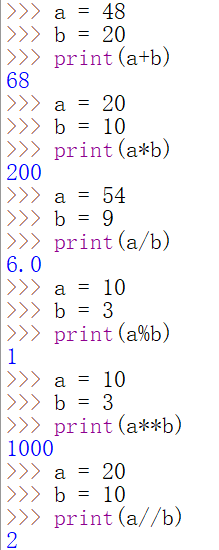

《初识Python》
大家好，让我们一起来学习Python，因本人也是个新手但我会把我所学的东西分享出来，并记录自己的经验学习过程，不单单是分享代码，会详细的讲解，如有错误地方希望大家指点出来。
Python的安装我就不说了直接开始
哈哈先写第一个程序。
print(“人生苦短，我学Python”)
操作演示：
1.1 认识运算符
算术运算符：
操作演示：
是不是觉得很没意思，刚开始我也觉得没意思但是也得一步一步来那我们就让它变得有意思。
赋值，所谓“赋值”将相应的具体的数据存储到某个量中。
i = 7
print(i)
上程序中，将 i 成为变量名，将7称为变量值。意思就是说 “i=7”是将7赋值给变量i赋值后i的值就是7了
我们来输出一下
想必各位知道我为什么讲这个了吧，是的没错，我们用赋值来运行刚刚的算术运算
演示操作：

这样是不是有意思多了用赋值取运行这些东西，python很强大的哦，不伦你多大数它都不运算出来给你。
让我们来学习第二种运算符：
比较运算符
演示操作：
<>是个无效的运算符，所以不用在意。
为什么会写些这么简单的呢，因为本人也是初学者，所以想把自己的经验记录下来，并且分享出来一起学习，而且这些基础的东西往后可是有大用处的。慢慢来不急
第三种运算符：
逻辑运算符
演示操作
扩展内容：
去输入一下扩展内容的列支或许能给你帮助哦~~
问题：这里是有规则的，多看几遍找出规则。
好啦，三种运算符就讲到这啦